Summary
This experiment investigates study session optimization. Full factorial of study block length, break duration, technique, and environment noise level for retention and attention span.
The design varies 4 factors: block min (min), ranging from 15 to 50, break min (min), ranging from 3 to 15, active recall pct (%), ranging from 0 to 100, and noise db (dB), ranging from 25 to 65. The goal is to optimize 2 responses: retention pct (%) (maximize) and attention score (pts) (maximize). Fixed conditions held constant across all runs include subject = biology, total hours = 3.
A full factorial design was used to explore all 16 possible combinations of the 4 factors at two levels. This guarantees that every main effect and interaction can be estimated independently, at the cost of a larger experiment (16 runs).
Quadratic response surface models were fitted to capture potential curvature and factor interactions. The RSM contour plots below visualize how pairs of factors jointly affect each response.
Key Findings
For retention pct, the most influential factors were block min (33.7%), active recall pct (25.6%), break min (22.1%). The best observed value was 74.0 (at block min = 15, break min = 15, active recall pct = 0).
For attention score, the most influential factors were active recall pct (46.1%), block min (30.5%), noise db (13.6%). The best observed value was 9.1 (at block min = 50, break min = 15, active recall pct = 0).
Recommended Next Steps
- Consider whether any fixed factors should be varied in a future study.
Experimental Setup
Factors
| Factor | Low | High | Unit |
|---|
block_min | 15 | 50 | min |
break_min | 3 | 15 | min |
active_recall_pct | 0 | 100 | % |
noise_db | 25 | 65 | dB |
Fixed: subject = biology, total_hours = 3
Responses
| Response | Direction | Unit |
|---|
retention_pct | ↑ maximize | % |
attention_score | ↑ maximize | pts |
Configuration
{
"metadata": {
"name": "Study Session Optimization",
"description": "Full factorial of study block length, break duration, technique, and environment noise level for retention and attention span"
},
"factors": [
{
"name": "block_min",
"levels": [
"15",
"50"
],
"type": "continuous",
"unit": "min"
},
{
"name": "break_min",
"levels": [
"3",
"15"
],
"type": "continuous",
"unit": "min"
},
{
"name": "active_recall_pct",
"levels": [
"0",
"100"
],
"type": "continuous",
"unit": "%"
},
{
"name": "noise_db",
"levels": [
"25",
"65"
],
"type": "continuous",
"unit": "dB"
}
],
"fixed_factors": {
"subject": "biology",
"total_hours": "3"
},
"responses": [
{
"name": "retention_pct",
"optimize": "maximize",
"unit": "%"
},
{
"name": "attention_score",
"optimize": "maximize",
"unit": "pts"
}
],
"settings": {
"operation": "full_factorial",
"test_script": "use_cases/113_study_habit/sim.sh"
}
}
Experimental Matrix
The Full Factorial Design produces 16 runs. Each row is one experiment with specific factor settings.
| Run | block_min | break_min | active_recall_pct | noise_db |
|---|
| 1 | 15 | 15 | 100 | 65 |
| 2 | 50 | 3 | 0 | 65 |
| 3 | 15 | 15 | 0 | 65 |
| 4 | 15 | 15 | 100 | 25 |
| 5 | 50 | 15 | 100 | 25 |
| 6 | 50 | 3 | 100 | 25 |
| 7 | 50 | 15 | 0 | 25 |
| 8 | 50 | 3 | 0 | 25 |
| 9 | 15 | 3 | 0 | 65 |
| 10 | 15 | 3 | 100 | 25 |
| 11 | 50 | 15 | 0 | 65 |
| 12 | 50 | 15 | 100 | 65 |
| 13 | 15 | 15 | 0 | 25 |
| 14 | 50 | 3 | 100 | 65 |
| 15 | 15 | 3 | 0 | 25 |
| 16 | 15 | 3 | 100 | 65 |
Step-by-Step Workflow
1
Preview the design
$ python doe.py info --config use_cases/113_study_habit/config.json
2
Generate the runner script
$ python doe.py generate --config use_cases/113_study_habit/config.json \
--output use_cases/113_study_habit/results/run.sh --seed 42
3
Execute the experiments
$ bash use_cases/113_study_habit/results/run.sh
4
Analyze results
$ python doe.py analyze --config use_cases/113_study_habit/config.json
5
Get optimization recommendations
$ python doe.py optimize --config use_cases/113_study_habit/config.json
6
Generate the HTML report
$ python doe.py report --config use_cases/113_study_habit/config.json \
--output use_cases/113_study_habit/results/report.html
Features Exercised
| Feature | Value |
|---|
| Design type | full_factorial |
| Factor types | continuous (all 4) |
| Arg style | double-dash |
| Responses | 2 (retention_pct ↑, attention_score ↑) |
| Total runs | 16 |
Analysis Results
Generated from actual experiment runs using the DOE Helper Tool.
Response: retention_pct
Top factors: block_min (33.7%), active_recall_pct (25.6%), break_min (22.1%).
Pareto Chart
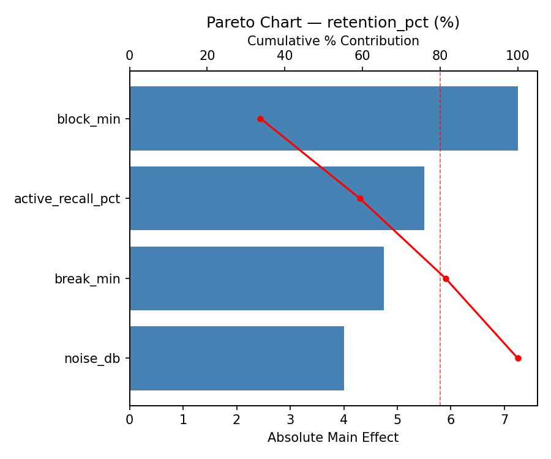
Main Effects Plot
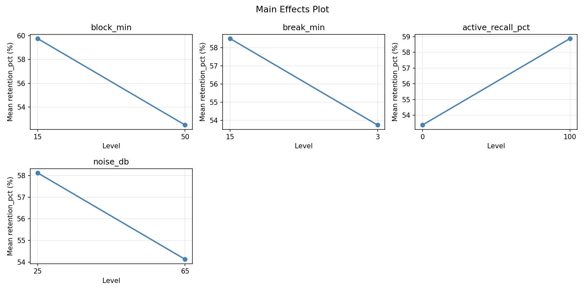
Response: attention_score
Top factors: active_recall_pct (46.1%), block_min (30.5%), noise_db (13.6%).
Pareto Chart
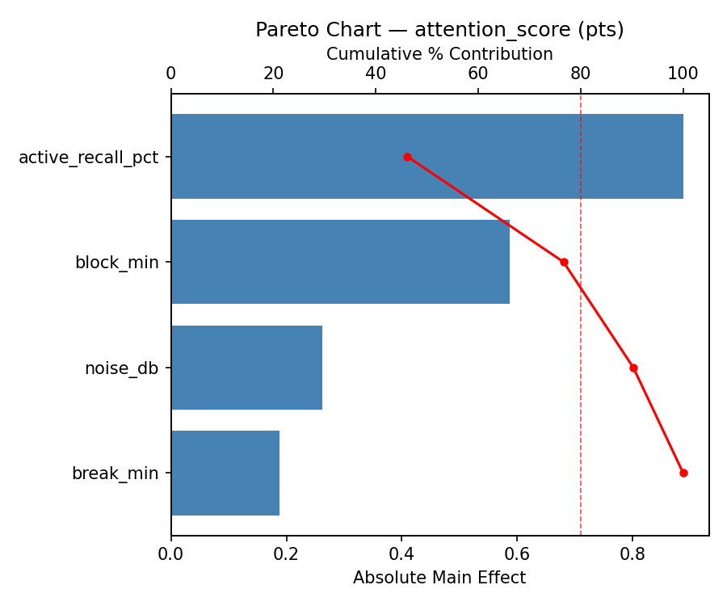
Main Effects Plot
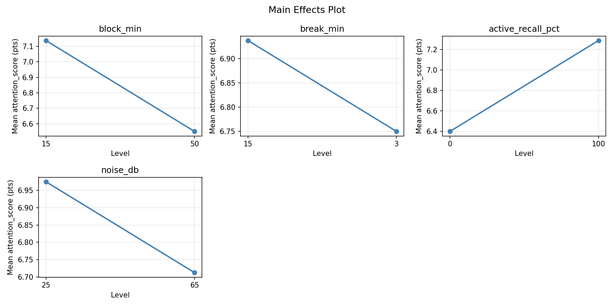
Response Surface Plots
3D surfaces fitted with quadratic RSM. Red dots are observed data points.
attention score active recall pct vs noise db
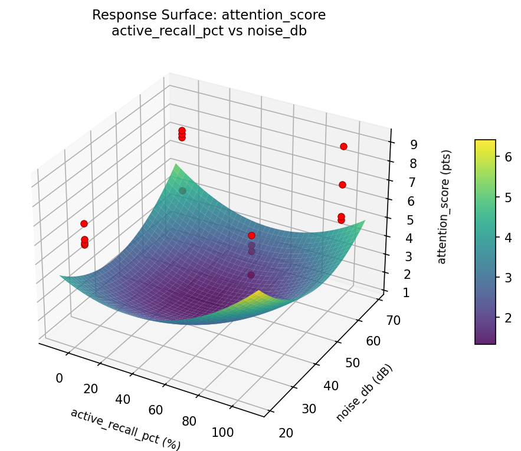
attention score block min vs active recall pct
attention score block min vs break min
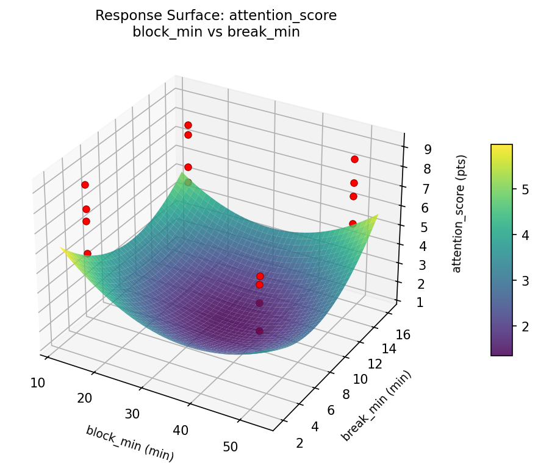
attention score block min vs noise db
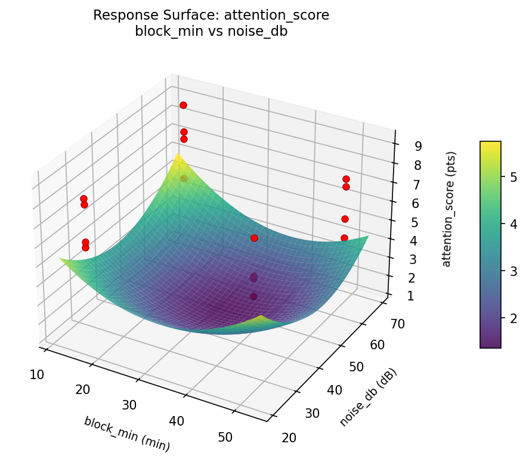
attention score break min vs active recall pct
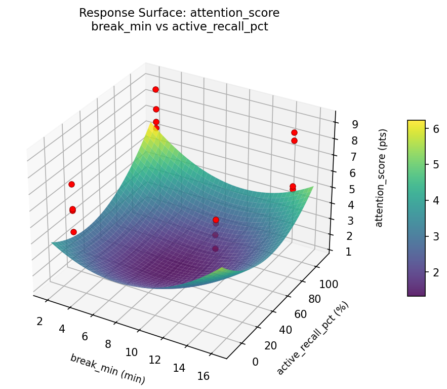
attention score break min vs noise db
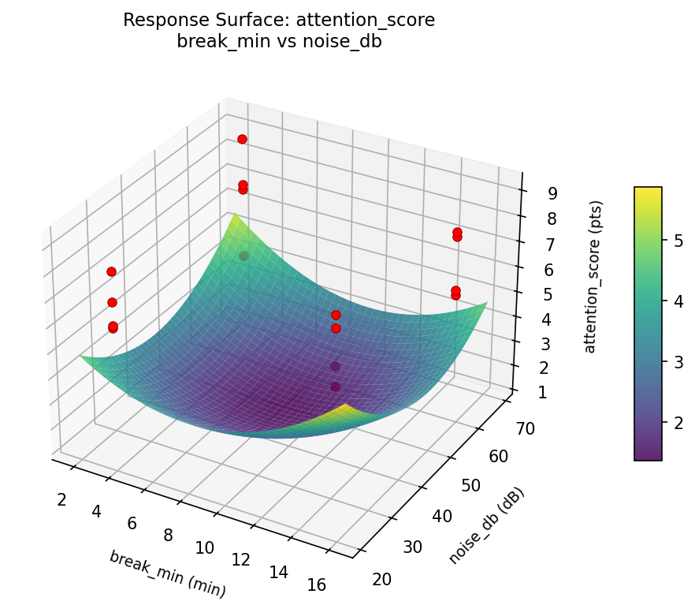
retention pct active recall pct vs noise db
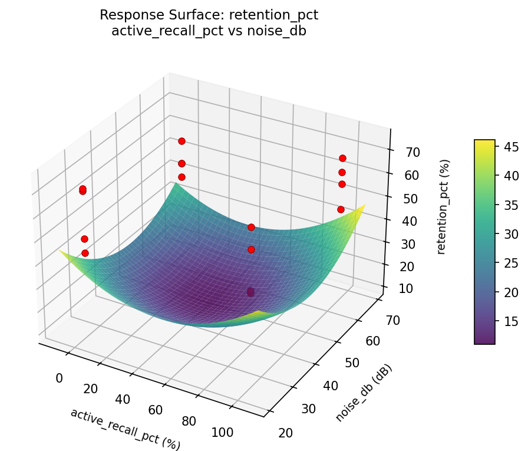
retention pct block min vs active recall pct
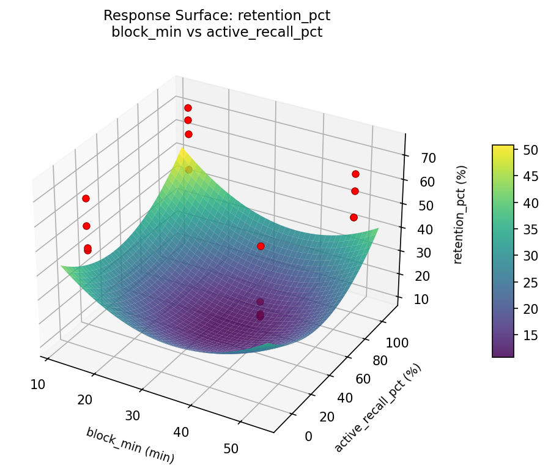
retention pct block min vs break min
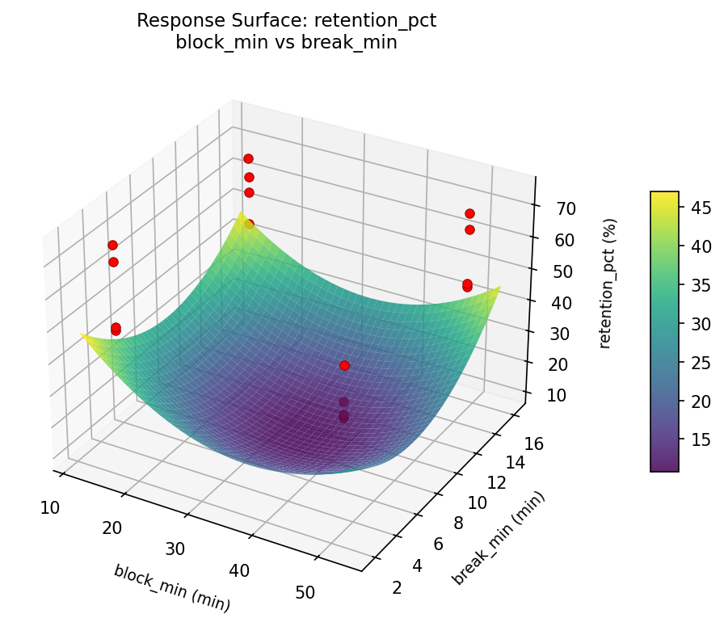
retention pct block min vs noise db
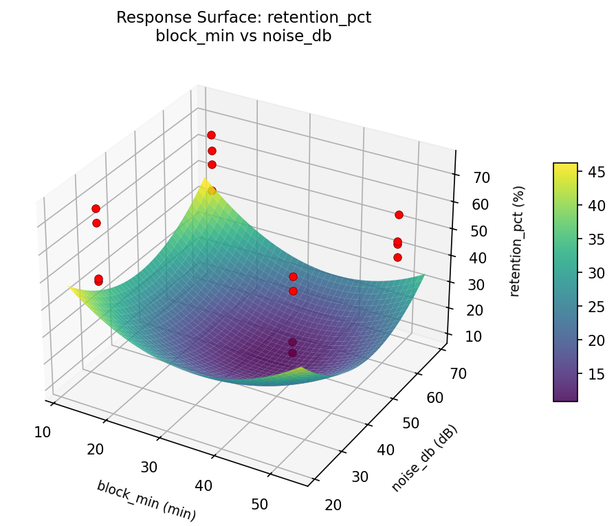
retention pct break min vs active recall pct
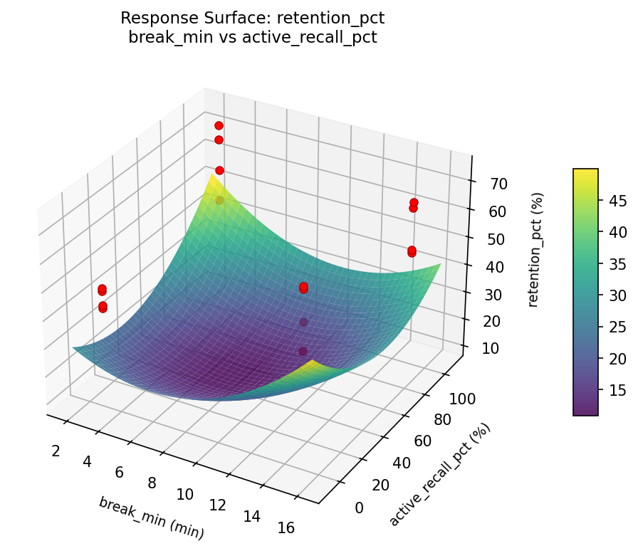
retention pct break min vs noise db
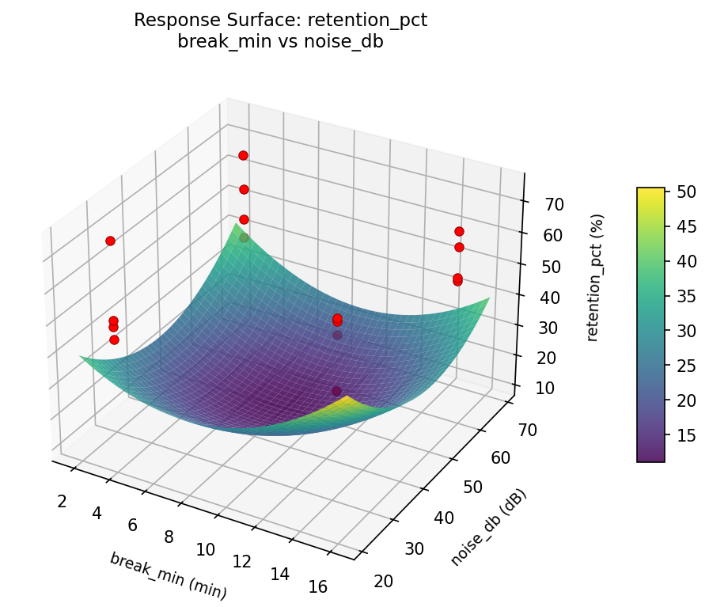
Full Analysis Output
RSM surface: rsm_retention_pct_block_min_vs_break_min.png
RSM surface: rsm_retention_pct_block_min_vs_active_recall_pct.png
RSM surface: rsm_retention_pct_block_min_vs_noise_db.png
RSM surface: rsm_retention_pct_break_min_vs_active_recall_pct.png
RSM surface: rsm_retention_pct_break_min_vs_noise_db.png
RSM surface: rsm_retention_pct_active_recall_pct_vs_noise_db.png
RSM surface: rsm_attention_score_block_min_vs_break_min.png
RSM surface: rsm_attention_score_block_min_vs_active_recall_pct.png
RSM surface: rsm_attention_score_block_min_vs_noise_db.png
RSM surface: rsm_attention_score_break_min_vs_active_recall_pct.png
RSM surface: rsm_attention_score_break_min_vs_noise_db.png
RSM surface: rsm_attention_score_active_recall_pct_vs_noise_db.png
=== Main Effects: retention_pct ===
Factor Effect Std Error % Contribution
--------------------------------------------------------------
block_min -7.2500 2.7109 33.7%
active_recall_pct 5.5000 2.7109 25.6%
break_min -4.7500 2.7109 22.1%
noise_db -4.0000 2.7109 18.6%
=== Interaction Effects: retention_pct ===
Factor A Factor B Interaction % Contribution
------------------------------------------------------------------------
break_min active_recall_pct 11.0000 34.9%
block_min break_min -5.2500 16.7%
break_min noise_db 5.0000 15.9%
active_recall_pct noise_db 4.7500 15.1%
block_min noise_db -3.5000 11.1%
block_min active_recall_pct -2.0000 6.3%
=== Summary Statistics: retention_pct ===
block_min:
Level N Mean Std Min Max
------------------------------------------------------------
15 8 59.7500 10.5526 48.0000 74.0000
50 8 52.5000 10.5153 42.0000 70.0000
break_min:
Level N Mean Std Min Max
------------------------------------------------------------
15 8 58.5000 9.6954 47.0000 70.0000
3 8 53.7500 12.0446 42.0000 74.0000
active_recall_pct:
Level N Mean Std Min Max
------------------------------------------------------------
0 8 53.3750 11.0575 42.0000 70.0000
100 8 58.8750 10.6024 47.0000 74.0000
noise_db:
Level N Mean Std Min Max
------------------------------------------------------------
25 8 58.1250 12.5178 43.0000 74.0000
65 8 54.1250 9.2804 42.0000 69.0000
=== Main Effects: attention_score ===
Factor Effect Std Error % Contribution
--------------------------------------------------------------
active_recall_pct 0.8875 0.3343 46.1%
block_min -0.5875 0.3343 30.5%
noise_db -0.2625 0.3343 13.6%
break_min -0.1875 0.3343 9.7%
=== Interaction Effects: attention_score ===
Factor A Factor B Interaction % Contribution
------------------------------------------------------------------------
break_min active_recall_pct 1.0125 24.0%
block_min break_min -0.9125 21.6%
active_recall_pct noise_db -0.9125 21.6%
break_min noise_db 0.7125 16.9%
block_min noise_db -0.6375 15.1%
block_min active_recall_pct -0.0375 0.9%
=== Summary Statistics: attention_score ===
block_min:
Level N Mean Std Min Max
------------------------------------------------------------
15 8 7.1375 1.3638 5.2000 9.1000
50 8 6.5500 1.3320 4.4000 8.7000
break_min:
Level N Mean Std Min Max
------------------------------------------------------------
15 8 6.9375 1.3027 5.2000 8.7000
3 8 6.7500 1.4541 4.4000 9.1000
active_recall_pct:
Level N Mean Std Min Max
------------------------------------------------------------
0 8 6.4000 1.1263 4.4000 7.7000
100 8 7.2875 1.4535 5.2000 9.1000
noise_db:
Level N Mean Std Min Max
------------------------------------------------------------
25 8 6.9750 1.1585 5.7000 8.7000
65 8 6.7125 1.5652 4.4000 9.1000
Pareto chart (retention_pct): use_cases/113_study_habit/results/analysis/pareto_retention_pct.png
Pareto chart (attention_score): use_cases/113_study_habit/results/analysis/pareto_attention_score.png
Main effects (retention_pct): use_cases/113_study_habit/results/analysis/main_effects_retention_pct.png
Main effects (attention_score): use_cases/113_study_habit/results/analysis/main_effects_attention_score.png
Optimization Recommendations
=== Optimization: retention_pct ===
Direction: maximize
Best observed run: #5
block_min = 15
break_min = 15
active_recall_pct = 0
noise_db = 25
Value: 74.0
RSM Model (linear, R² = 0.5328, Adj R² = 0.3629):
Coefficients:
intercept +56.1250
block_min -1.7500
break_min +4.6250
active_recall_pct -5.6250
noise_db +1.6250
RSM Model (quadratic, R² = 0.7827, Adj R² = -2.2594):
Coefficients:
intercept +11.2250
block_min -1.7500
break_min +4.6250
active_recall_pct -5.6250
noise_db +1.6250
block_min*break_min -2.0000
block_min*active_recall_pct +0.2500
block_min*noise_db -1.7500
break_min*active_recall_pct -4.1250
break_min*noise_db -0.8750
active_recall_pct*noise_db -1.6250
block_min^2 +11.2250
break_min^2 +11.2250
active_recall_pct^2 +11.2250
noise_db^2 +11.2250
Curvature analysis:
block_min coef=+11.2250 convex (has a minimum)
break_min coef=+11.2250 convex (has a minimum)
active_recall_pct coef=+11.2250 convex (has a minimum)
noise_db coef=+11.2250 convex (has a minimum)
Notable interactions:
break_min*active_recall_pct coef=-4.1250 (antagonistic)
block_min*break_min coef=-2.0000 (antagonistic)
block_min*noise_db coef=-1.7500 (antagonistic)
active_recall_pct*noise_db coef=-1.6250 (antagonistic)
break_min*noise_db coef=-0.8750 (antagonistic)
Predicted optimum (from linear model):
block_min = 15
break_min = 15
active_recall_pct = 0
noise_db = 65
Predicted value: 69.7500
Model quality: Moderate fit — use predictions directionally, not precisely.
Factor importance:
1. active_recall_pct (effect: -11.2, contribution: 41.3%)
2. break_min (effect: -9.2, contribution: 33.9%)
3. block_min (effect: -3.5, contribution: 12.8%)
4. noise_db (effect: 3.2, contribution: 11.9%)
=== Optimization: attention_score ===
Direction: maximize
Best observed run: #4
block_min = 50
break_min = 15
active_recall_pct = 0
noise_db = 25
Value: 9.1
RSM Model (linear, R² = 0.0439, Adj R² = -0.3038):
Coefficients:
intercept +6.8438
block_min +0.1063
break_min +0.1437
active_recall_pct -0.1563
noise_db -0.1312
RSM Model (quadratic, R² = 0.4331, Adj R² = -7.5031):
Coefficients:
intercept +1.3688
block_min +0.1062
break_min +0.1437
active_recall_pct -0.1563
noise_db -0.1312
block_min*break_min -0.3938
block_min*active_recall_pct -0.0438
block_min*noise_db -0.2437
break_min*active_recall_pct -0.3062
break_min*noise_db -0.3813
active_recall_pct*noise_db +0.4437
block_min^2 +1.3688
break_min^2 +1.3688
active_recall_pct^2 +1.3688
noise_db^2 +1.3688
Curvature analysis:
block_min coef=+1.3688 convex (has a minimum)
break_min coef=+1.3688 convex (has a minimum)
active_recall_pct coef=+1.3688 convex (has a minimum)
noise_db coef=+1.3688 convex (has a minimum)
Notable interactions:
active_recall_pct*noise_db coef=+0.4437 (synergistic)
block_min*break_min coef=-0.3938 (antagonistic)
break_min*noise_db coef=-0.3813 (antagonistic)
break_min*active_recall_pct coef=-0.3062 (antagonistic)
Predicted optimum (from linear model):
block_min = 50
break_min = 15
active_recall_pct = 0
noise_db = 25
Predicted value: 7.3813
Model quality: Weak fit — consider adding center points or using a different design.
Factor importance:
1. active_recall_pct (effect: -0.3, contribution: 29.1%)
2. break_min (effect: -0.3, contribution: 26.7%)
3. noise_db (effect: -0.3, contribution: 24.4%)
4. block_min (effect: 0.2, contribution: 19.8%)